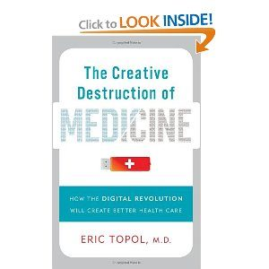

The Creative Destruction of Medicine: How the Digital Revolution Will Create Better Health Care
This post was originally written in French.
I just finished reading the amazingly interesting Eric Topol (@EricTopol) book:
The Creative Destruction of Medicine: How the Digital Revolution Will Create Better Healthcare.


Another interesting part was this example on mass CT lung screening. How it would save thousands of lives, but also how it's just unpayable for the moment:

Then, there this part that explains that no study proved that Nintendo DS (and others) brain fitness product really improved general cognitive functioning. Or this other part about Organ Printing. I'll certainly write about this more in depth later on the blog. About Medical errors and Faulty systems, oh yes, we can do much better:

I like the part about Doctors and Emails, more specifically this example of a new medical practice combining remote follow-up, new technologies and in the end, better care:

Would this work in Europe? What about a company building a Cloud Platform to manage all this? Those are just a few examples from a rich book. In the end, Eric Topol's book just provide me with more motivation to continue our work at Telemis, building software to best manage Medical Imaging Data and in the end help medical specialists "Extend Human Life". And I'll finish on this quote from Voltaire which starts the first part of the book: